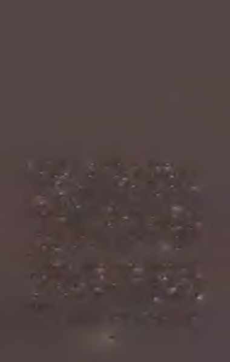
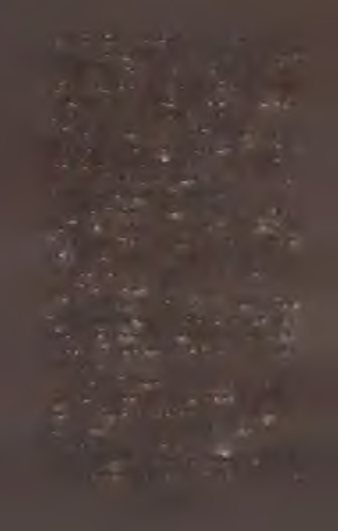
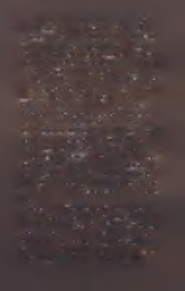
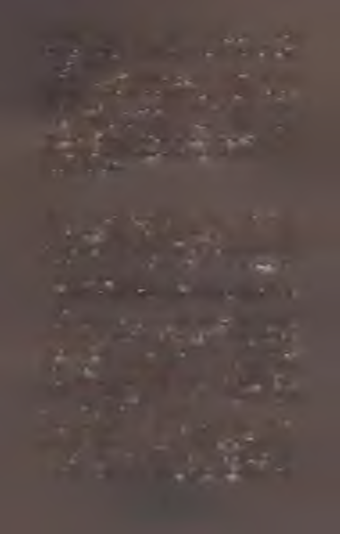

Auri dördüncü gün uyandığında vaziyet değişmişti.
Gerinerek kendine gelmeden, gözlerini yekpare karanlığa
açmadan önce bile bunu anladı. Foxen korkmuş ve daralmıştı. Demek ki bugün bir azalma günüydü. Bir yanma günü.
Genç kız Foxen'i suçlamıyordu. Bunun nasıl bir şey olabileceğini biliyordu. Bazı günler kurşun gibi üstünüze çöküverirdi. Bazıları kediler kadar vefasız olurdu ve teselliye ihtiyaç
duyduğunuzda kaçıp giderdi. Daha sonra onları istemediğinizde de geri gelip başınıza musallat olurlar ve soluğunuzu çalarlardı.
Hayır. Foxen’i suçlamıyordu. Fakat yarım dakika boyunca
keşke bu daha farklı türde bir gün olsaydı diye içinden geçirdi; hem de dünyaya karşı açgözlü davranmanın hiçbir fayda sağlamayacağını, bunun hınzırca bir davranış olduğunu bile
bile.
Yine de yanma günleri hercaiydi. Sağları solları b el97
li olmazdı. Bunlar faaliyet için değil, oturduğun yerde
oturm a ve ayaklarım yerden ayırmama için iyi günlerdi.
Fakat Auri’nin sadece üç günü kalm ıştı. Daha halledecek o kadar çok işi vardı ki.
Karanlıkta usulca hareket eden genç kız F oxen ’i tabağından aldı. Foxen korkudan söndü sönecekti. Bu haldeyken onu ikna etm ek m üm kün değildi. Öyle som urtkandı ki neredeyse kavgacı olduğu söylenebilirdi.
Bu yüzden Auri onu öptü ve uygun yere geri koydu.
Sonra zifiri ve ağır karanlığın kasvetli örtüsü altında
yatağından çıktı. Gözlerinin açık olup olm aması fark
etm ezdi; bu nedenle elleri sedir kutuyu ararken onları
kapalı bıraktı. Kutudan kibrit ve bir mum çıkarırken de
açmadı.
Yere sürttüğü kibrit kıvılcım lar çıkardı, parladı, son ra da kırıldı. A uri’nin kalbine bir ağırlık çöktü. Kötü bir güne kötü bir başlangıç yapm ıştı. İkinci kibrit neredeyse hiç kıvılcım çıkarm adan hışırdam akla yetindi.
Ü çüncü ikiye bölündü. D ördüncünün yanmasıyla sön mesi bir oldu. Beşinci sürte sürte tükenip gitti. Başka kibrit kalmadı.
Auri bir süre karanlıkta oturdu. Daha önce de böyle
şeyler olm uştu. G eçen seferki uzun zaman önceydi ama
Auri onu hâlâ hatırlıyordu. Tıpkı şim diki gibi bir yumurta kabuğu kadar boş bir vaziyette oturup kalm ıştı.
Kızgın karanlıkta oyuk ve kurşun gibi bir göğüsle bek lerken onu ilk kez m üzik yaparken duymuştu. O, genç kıza tatlı, yeni ve m ükem m el adını verm eden önce. O
ad ki içini asla terk etm eyen güneşten bir parçaydı. Bir
lokm a ekm ekti. Yüreğindeki bir çiçekti.
98
Bunları düşünm ek A uri’nin ayağa kalkm asını kolaylaştırdı. G enç kız kom odinine kadarki yolu biliyordu.
Leğende tem iz su vardı. Yüzünü, ellerin i v e ...
Ama sabun kalm am ıştı. Auri sabunu geçen sefer
bitirm işti. Diğer kalıplarıysa ait oldukları yerde, yani
F ırın lar’daydı.
G en ç kız tekrar yere, yatağının yanm a oturdu. G özlerin i yum du. Telleri kopm uş, k arışık saçları ve bir düğm e kadar yapayalnız haliyle neredeyse orada kalacaktı.
F akat o geliyordu. Yakında tüm tatlılığı, cesareti,
parçalanm ışlığı ve şefkatiyle burada olacaktı. Taşıdıklarıyla, hünerli parm aklarıyla ve pek çok şeyin farkın da bile olm ayarak g elecekti. O dünyaya karşı nasır tu tm uştu ama bütün bunlara k a rşın ...
Üç gün. Üç kısa gün sonra ziyarete gelecekti. Ve Auri
tüm çabalarına ve gezinm elerine rağm en ona uygun bir
hediye bulm uş değildi. İşlerin gidişatı hakkındaki tüm
bilgeliği bile getirebileceği bir şeyin boş bir yankısını
yakalayam am ıştı.
Ne uygun bir arm ağanı ne de henüz paylaşacak bir
şeyi vardı. Bu böyle olm azdı. O nedenle Auri kendini
toparladı ve yavaşça ayağa kalktı.
K abuk’tan çık m an ın üç yolu vardı. K oridor karan lıktı. Kapı aralığı karanlıktı. Kapı karanlık, kapalı, boş
ve h içlik le doluydu.
O yüzden Auri dostları ya da kendisine reh berlik
edecek bir ışığı olm aksızın yavaşça ve dikkatle k o ridordan geçerek Ağaç’a doğru yol aldı.
M um ayı’yı kat ederken yönünü bu labilm ek için
99
parm aklarını hafifçe duvara sürttü. Tonozlar ışıksız çok
tehlikeli olduğu için uzun yoldan gitti. Sonra A ldıcık’ı
yarılam ışken ileride Siyah On İki’yi bulm a korkusuyla
durdu ve gerisingeri döndü. Tıpkı aşağıdaki gölet gibi
yukarıdaki hava da karanlık, durgun ve soğuktu. Genç
kız bugün oranın düşüncesine bile katlanamıyordu.
Bu da rutubetli ve küflü llin tilik ’ten başka hiçbir se
çeneğinin kalm adığı anlam ına geliyordu. Ü stelik tüm
bunlar yetm ezm iş gibi K ıtırak’tan geçen tek uygun yol
lüzumsuz derecede dardı ve örüm cek ağlarıyla kaplıydı.
Ağlar genç kızın saçlarına takılarak onları yapış yapış ve
karm akarışık yaptı.
Fakat Auri sonunda Ağaç’a ulaştı. Soğuk kuyuda
akan suyun belli belirsiz şırıltısı onu selamlamaya geldi ve genç kız ne kadar aç olduğunu ancak o zaman fark etti. Rafta geriye kalan birkaç kibritini buldu ve gaz
lam basını yaktı. Ani parlaklık gözlerini acıttı, düzeldikten sonra bile sarı renkli titrek alev her şeye hem tuhaf hem de tedirgin bir görünüm katıyordu.
Auri kalan beş kibriti cebine koydu
ve soğuk su içti. Raflar o garip, ürkek
ışıkta her zam ankinden daha boş
gözüküyordu. G enç kız buz gibi
suda yüzünü, elini ve ayağını
yıkadı. Son ra yere oturdu ve
k ü çü k ısırık larla turpunu
yedi. O b itin ce kalan
son in cirin i m ideye indirdi. U facık olan yüzü asıktı.
Havaya m u skat k ok u su karışıyordu.
■s®«®
Auri o titreyik ve yapış yapış haliyle F ırm la r’a ilerledi.
Bugün içerisi fırın gibi değildi. U nu tu lm u ş b ir o cak
m isali için e kap anık ve som u rtkandı.
O lgu n b o ru ların yanından geçen A uri epey dönüp
d o laştık tan sonra sabu n zu lasm m b ek lem esi için dört
d ö rtlü k olan k ü çü k tuğla n işe gitti. Niş sıcak olm asa
da kuruydu. Ve d e ...
Sabun falan yoktu . Sabu n ların ın yerin d e y eller esiyordu.
F ak at hayır. Gaz lam basın ın titrek ışığı onu y an ıltıyordu. Zaten hep böyle tu h af ve sarı olurdu. Her yere gölgeler düşürürdü. Şeyaltı’nı değiştirirdi. O na güven
olm azdı. Bu belli ki farklı ve bom boş b ir tuğla nişti.
A uri arkasına dönüp geldiği yoldan K ord üştü ’ye
kadar gitti. Sonra da d ö n ü şleri sayarak geri döndü. Sol
ve sağ. Sol, sol, son ra sağ.
Hayır. Burası F ırın la r’dı. Burası onu n nişiydi. F akat
içi b oştu . Bez çuval yoktu . D ikkatle h azırlan m ış kalıp
kalıp m ükem m el yaz sabu n ları yoktu. Auri m ekân ın
loş k ızıl p arıltısınd a bile iç in in buz k estiğ in i h issetti.
Yoksa genç k ızın Şeyaltı’nda b iri m i vardı? B iri eşyaların yerin i mi değiştiriyordu? A uri’nin yıllar sürm üş
uzun ve zorlu çalışm aların ı heba m ı ediyordu?
Yüreğine k or düşen g en ç kız etrafı tarayarak köşe
b u cak bak ın d ı ve lam basın ı gölgelere tu ttu . Topu topu
101
üç m etre uzakta bez çuvalı lim e lim e edilm iş halde
buldu. C innas sabu n larının iç açıcı k oku su na m isk
ve sidik koku ları da karışıyordu. Tırm anm aya m eraklı
k ü çü k b ir hayvanın çık ın tı yapm ış bir tuğlaya sü rtü n düğü yere bir tutam kü rk yapışm ıştı.
Auri b irb irin e dolanm ış, yapış yapış saçlarıyla doğruldu. İlk başta donakalan m in ik yüzü o titreyik sarı ışıkta âdeta uyuşm uştu. Sonra ağzı öfk eli bir hal aldı.
G özlerin e sert bir bakış oturdu. Bir şey m ükem m el sabu n ların ın tam am ını yiyip bitirm işti.
E lin i uzatıp k ü rk tutam ını parm akları arasına aldı.
H areketi öyle hiddet doluydu ki dünyayı kırıp ikiye
bölebileceğ in d en korktu . Sekiz kalıp. Bütün bir kış
y etecek kadar sabun. H azırladığı tüm m ükem m el sabu nlar bir şey tarafından yenm işti. Yaratık buraya, sabuna en uygun yere gelip hepsin i birden yem eye cüret etm işti.
G en ç kız ayağını yere vurdu. A çgözlü şeyin bir hafta
boyunca sıçm asın ı um du. Berbat ben liğ in i dışarı sıçıp
tekrar için e alm asın ı, sonra da bir yarığa düşüp adım
kaybetm esini, ö fk eli karanlıkta yapayalnız ve bom boş
ölm esini um du.
K ürk tu tam ını yere attı. E lin i saçlarında gezdirm eyi
denedi am a p arm akları b irb irin e girm iş tellere takılıp
kaldı. Sert bak ışlı gözleri bir anlığına dolu dolu oldu
ama onları k ırp ıştırarak gözyaşlarını bastırdı.
Hiddetle ve başına gelen lerin doğrusuzluğuy-
la terden sırılsık lam olan A uri öfk eli adım larla sıcak
F ırm la r’dan çekip gitti.
102
eP®cŞ
K abu k ’a dönerken daha kısa yolu kullandı. O pasaklı ve kirlen m iş haliyle G üm üş On İk i’n in dibindeki g öletle yıkanm aya zam an ayırdı, sonrasında kendini
biraz daha iyi h issetti. U sulüne uygun banyo yapm am ıştı. B ir dalıp çıkm aydı. Bir durulanm aydı. Soğuktu da. Ama bu hali bile h iç yoktan iyiydi. Ay, göz ucuyla
tepedeki m azgaldan içeriye bakıyordu. F ak at nazik ve
m esafeli olduğu için Auri bunu dert etm edi.
Sudan çıktığın da silkin d i ve ıslak tenini elleriyle
ovaladı. K urum ak için F ırın lar’a dönm eyi düşünem i-
yordu. Bu böyle bir günde olacak iş değildi. G en ç kız
yukarıdaki m azgaldan içeriye bakan m ehtaba göz attı.
Tam ıslak saçlarını sıkm aya başlam ıştı ki b ir ses duydu. U facık bir şıpırtı. Yakarırcasm a m in icik bir cıy ak lam a. Başı dertte b irin in sesi.
U zun bir panik ânı boyunca A uri’nin eli ayağı tu tm az oldu. Bazen yolunu kaybeden bir şey On İk i’nin dibine kadar gelir ve su içerk en gölete düşerdi.
O nu bu lm ak soluksuz bir zam an aldı. G enç kızın
beş para etm ez kırp ışığı yok ettiğinden daha ço k gölge
yaratır gibiydi. Ü stelik boru ların ve G üm üş On İk i’de-
ki suyun dağıttığı yan k ılar her taraftan geldiği için k u lak ların ın faydası dokunm uyordu.
G en ç kız onu n ihayet buldu. C ıyaklayan ve g ü çsüzce çırp ınan u facık bir şey. B eb ek lik ten yeni çık m ış
yaratık neredeyse kendi başına yaşam ını sürdü rem eyecek kadar k ü çü k tü . Auri b ir payandaya tu tun arak 103

suya doğru eğildi. D engesini koru m ak için bir bacağını kaldırdı ve bo ştak i kolunu başın ın üstünden ileriye uzatarak bir dansçı m isali esnedi. E li havada zarif bir
yay çizdi ve gölete dalarak sefil yaratığı sudan a ld ı...
Ve yaratık onu ısırdı. D işlerini genç k ızın baş ve işaret parm akları arasındaki etli kısm a batırdı.
G özlerin i k ırp ıştıran Auri ufak kokarcayı avucuna
alarak kend ini g öletin kenarına geri çekti. Yaratık debelendiği için onu istediğinden daha sık ı tutm ak zo runda kaldı. Tekrar gölete düşerse A uri onu bulup ç ıkarm adan önce, hayvan boğulabilircli.
Auri her ik i ayağım da taşlara b astık tan sonra ellerini göğsüne dayayarak m inik kokarcaya b ir kafes yaptı.
F en erin i tutacak eli kalm adığından m ehtaba güvenerek E ski D em irpatikalar’ı tırm andı. K urtulm ak için m ücadele eden kokarca çırpınıp tırm aladı ve A uri’nin
parm ak ucunu sertçe ısırdı.
Fakat artık en yakınd aki m azgala varm ışlardı. G en ç
kız elini kaldırdı ve yolunu kaybetm iş zavallı şeyi dışarı itekledi. O nu Şeyaltı’ndan çıkarıp ait olduğu geceye; an nelerin, çöp ten ek elerin in ve parke taşlarının diyarına yolcu etti.
Auri tekrar G üm üş O n İk i’nin dibine indi ve z o n k layan başın ı gölete daldırdı. Başı epeyce zonkladı ama doğrusunu söylem ek gerekirse asıl in cin en duygularıydı. B ir şey ona bu kadar k abalık etm eyeli fani bir öm re bedel bir zam an geçm işti.
Adı tüm koyuluğu ve ağırlığıyla göğsünde asılı du ran Auri elbisesin i çekip çıkardı. E lbise bugün ü stü ne 104

doğru düzgün oturm uyordu. Lam banın sa n ışığında
sanki her şey ona pis pis bakıyordu. Saçları berbattı.
G en ç kız aynadaki yansım asını görm em ek için
G am ’dan kaçındı ve uzun yoldan K abu k’a yürüdü.
U ğrak’a girdiğinde neredeyse her şeyde b ir terslik o lduğunu gördü. Elbette. Ne de olsa bu öyle b ir gündü.
F en eri gereğinden daha sert şekilde m asaya bırakarak alevi bir anlığına parlattı. Sonra da m ekâna çe k idüzen verm ek için elinden geleni yaptı. Ç obanpüskülü şişesi, sayfa kenarları ayrılm am ış oktavo kitabın tüm o
k atlı sırlarına yakın m ı duracaktı? Hayır, ik in ci rafın
uzak ucunda tek başına bek ley ecek ti. R eçine k en d ine ait bir alan istem ekteydi. Ağzına kadar koyu, mavi ren k li defne m eyveleriyle dolu kavanoz köşe m asasına
geri gitti. M in ik taş heyk elcik se diğer hepsinden daha
ü stü n m ü şçesin e y ü k sek tek i şarap rafına tünedi.
Yerinde kalan tek şey genç kızın daha yeni elde ettiği m ükem m el pal peteği oldu. A uri sırf neşesi yerine gelsin diye ondan bir ısırık alm ayı düşündü. Böyle bir
davranışın tüm b en cilliğ in e rağm en neredeyse alacak tı da. Fakat o an ki haliyle peteğe dokunm aya cesaret edem edi.
G en ç kız ortalığı elind en geldiğince çekip çevird ikten sonra feneri elin e alıp K abuk’a geçti. Sedir kutusu bir nebze dağılm ıştı ve etrafa k ırık k ib ritler saçılm ıştı.
Lâkin h er ik i soru n da çabu cak çözüldü. P irin ç çark ın durum u iyiydi. M ükem m el yaprağı. Taş kutusu.
Güz altının d an yüzüğü. Lavantayla dolu gri cam şişesi.
Hepsi de iyiydi. A uri biraz gevşediğini hissetti.
105
Sonra battaniyesi gözüne ilişti. Kendi elleriyle en
uygun biçim de topladığı m ükem m el battaniyesi bu-
ruşm uştu ve köşesi yere değiyordu.
Auri uzun bir süre öylece kalakaldı. A ğlayabilece
ğim düşündü am a için i yokladığında h iç gözyaşının
kalm adığını k eşfetti. Sanki içi k ırık cam parçalarıyla
ve çapaklarla doluydu. Bitkindi ve her şeyden üm idini
kesm işti. Ve eli ağrıyordu.
F a k a t için d e h iç gözyaşı y ok tu . O y ü zd en b a tta n iy esin i toplayıp D alg acı’ya götürdü. Tem iz b ir p irin ç b o ru b u ld u k tan so n ra daim i rüzgârda havalan sın
diye b attan iy ey i b ir perde gibi tü n elin ortasın a astı
ve b a ttan iy en in h afifçe ileri geri sallan m asın ı sey retti. B attan iy e biraz şişip dalgalandı am a daha fazlası olm ad ı.
G en ç kız k a şla rın ı çattı ve battan iy ey i in d irm eye
ça lıştı. F a k a t ö zen siz davrandı ve an i b ir esin ti fen erin i sön d ürd ü. O nu tek rar y akm ak başka b ir kıym etli k ib ritin e mal oldu.
D alg acı y en id en k ırp ışık la d oldu ğu n da A uri a sılarak b attan iy ey i aşağı in d ird i, ters çev ird i ve tek rar boruya astı. F a k a t hayır. İster ters iste r düz assın en
u fak b ir d eğ işik lik olm uyordu.
B u n u n ardından E sk i D em irp atik alar’ı tırm an d ı ve
ayı en ço k seven m azgalı bu ld u . S o lu k m eh tap k ard elen ler g ibi, güm üş b ir m ızrak gibi aşağı düşüyordu.
A uri m eh tabı y ak alasın , onu soğ u rsu n diye b a tta n iyeyi açtı.
Ç abası boşu n ayd ı.
B attan iy eyi Flarm aniye bo y u n ca geri geri taşıdı.
O nu Flavari’n in tep esin e çık ard ı, aşağı attı ve o n u n
tel la b iren tin e d ü şm esin i seyretti. S o n u n d a battaniye
dibe y akın bir tele tak ıld ı ve orada asılı k alarak h a fif
h a fif aşağı y u k arı oynadı. G en ç kız daha so n ra onu
K ab u k ’a geri götü rd ü ve de orada ö ylece durup n is p et yapan, titrey ik ışık ta a ltın sarısı parıldayan adi, sin ir b o zu cu , in a tçı çark a sardı.
107
B u n u n da en u fak b ir yardım ı d oku n m ad ı.
Yapılan kabahati hafifletecek
başka bir şey akıl edemeyen Auri battaniyeyi ta Yüklük’e ve yeni olduğu kadar kusursuz olan oturma odasına kadar götürdü. Orada battaniyeyi kanepenin arkalığına serdi. Onu katlayıp sandalyenin üstüne
koydu.
Sonunda gerçek bir çaresizlikle dişlerini sıktı
ve battaniyesini odanın ortasındaki kırmızı gür
halının üstüne serdi. Battaniyeyi iki eliyle birden
düzeltirken zemindeki taşlara değmemesine özen
gösterdi. Battaniye ile halı neredeyse kusursuz bir
uyum içindeydi. Ve bir anlığına Auri’nin içini bir
umut kaplayıp...
Fakat hayır. Çabalan işe yaramadı. Bunu biliyordu.
Aslında başından beri gerçeğin farkındaydı. Hiçbir şey
battaniyeyi tekrardan adam etmeye yetmeyecekti.
Kaşlarını çatan Auri battaniyeyi kaptığı gibi nankör
şeyi bir top haline getirdi ve adsız merdivenden yukarı
çıktı. Kendini eski püskü bir hayvan postu kadar basık
ve hırpalanmış hissediyordu. Her iki tarafı da yazılarla
dolu bir kâğıt kadar kuruydu. Yeni taş merdivenin şaka
yollu sataşmaları bile içinde neşe uyandırmıyordu.
Molozu tırmandı, yıkık duvardan geçti ve Kağnı’ya
girdi. Sarı titreyikte oda bir başka gözüküyordu. Sanki
insanın üstüne üstüne gelen bir korku ve hüsranla doluydu.
Ve genç kızın bakışları makyaj masasından geçerken
onu daha farklı gördü. Masa artık havalı falan değildi.
108
Auri oynak ışıkta onun uğursuz bir
eğriliği olduğunu fark etti ve onu
aslından çıkaran şey gözüne ilişti.
Masanın düzensizliğinin paramparça
kenarlarını hissedebilmekteydi.
Fakat birbirine dolanmış, yapış yapış
saçlarıyla, o pasaklı ve oyuk haliyle yanlışı
düzeltmek için uygun bir durumda olduğu
söylenemezdi. Nankör şeyle ilgilenecek havada
değildi.
Auri öyle yapmaktansa gardırobun önünde diz
çöktü ve gaz lambasını yanma bıraktı. Dizleri taş zeminden soğuk kaparken çekmeceyi açtı ve içindeki yumuşacık, katlı çarşaflara baktı.
Auri gözlerini kapadı. Uzun, zoraki bir nefes aldı ve
onu tekrar vererek hafifçe inledi.
Gözlerini açmadan battaniyeyi sertçe çekmeceye tıkıştırdı. Ardından elini en üstteki çarşafa koydu. Evet. Bu yaptığı adildi. Gözleri görmüyorken bile çarşafın hoşluğunu sezebilmekteydi. Parmakları yumuşacık yüzeyde gezinmeye devam etti...
Auri belli belirsiz bir çıtırtı işitti ve burnuna yanık saç
kokusu geldi.
Kendini geriye atan genç kız elleri ve ayakları üstünde
çılgınca geri geri giderek habis sarı alevden kaçtı. Saçlarını
yokladığında sadece birkaç asi telin kömürleştiğini öğrenmek tek tesellisi oldu. Hışımla tekrar gardırobun önüne kadar gitti, battaniyesini kaptı ve öfkeden gerekli nezaketi gösterip göstermediğine bile aldırış etmeden çekmeceyi çarparak kapattı.
Daha sonra yıkık duvardan geçerken ayak parmaklarını
109

çıkık bir taş bloğa çarptı. Lambasını neredeyse düşürecekti.
Onun yerine acıyla haykırdı ve tökezleyerek dengesini sağlamaya çalıştı.
Genç kız yere çöktü. Battaniyesini düşürdüğünü ancak o
zaman fark etti. Battaniye yanındaki çıplak taşlarda yatıyordu. Auri dişlerini öyle sert sıktı ki kırılacaklarından korktu.
Uzunca bir sürenin ardından eşyalarını topladı, ayak
sürüyerek Uğrak’a gitti ve battaniyeyi öfkeyle şarap rafına
tıktı. Ne de olsa battaniye artık oraya aitti. Durum bunu
gerektirmekteydi.
Auri düşünme sandalyesinde oturup pirinç çarka dik dik
bakarak epey zaman geçirdi. Parıltısıyla sıcak balı andıran
çark o sarı ışıkta pek usluydu. Yine de genç kız ona dik dik
bakmaktan vazgeçmedi. Sanki suç ondaymış, her şeyi berbat eden oymuş gibi.
Sonunda küskünlüğü geçti. Gerçeği anlayacak kadar sakinleşti.
Akıntıya karşı yüzemez veya rüzgârın yönünü değiştiremezdin. Peki ya bir fırtına çıkarsa? Eh, o zaman yelken açmayıp gemiyi hazırlar ve sintine basardın. Auri bu haldeyken her şeyi allak bullak etmekten başka ne yapabilirdi ki?
Auri dünyanın gerçek düzenine sırt çevirmişti. Önce
kendini toparlardın. Sonra evini. Sonra gökyüzünün sana
ait olan köşesini. Ondan sonra...
Doğrusu genç kız o zaman ne olacağını bilmiyordu. Fakat ondan sonra dünyanın iyi imal edilmiş ve yağlanmış bir çarklı saat gibi biraz kendiliğinden işlemeye başlayacağını
umuyordu. Olmasını umduğu şey buydu. Çünkü açıkçası
110
bazı günler kendini bitip tükenmiş hissediyordu. Sırf kendisi olmak, dünyanın doğru düzgün dönmesi için yalnız ba
şına çalışıp didinmek onu çok yormuştu.
Yine de ya surat asacak ya da yelken açacaktı. O yüzden
Auri ayağa kalkıp yüzünü, elini ve ayağını duruladı. Tabii ki
hiç sabunu yoktu. Yaptığı doğru düzgün bir yıkanma değildi. Kendini azıcık bile iyi hissetmedi. Ama elden ne gelirdi?
Genç kız lambayı dudaklarına götürdü ve üfleyerek sarı
renkli alevden dili söndürdü. Karanlık derhal hücum ederek odayı doldurdu ve Auri dar, çıplak yatağına uzandı.
Auri uzun süre karanlıkta yattı. Yorgun, allak bullak, aç ve
hissiyatsızdı. Hem yüreği hem de başı bitkin durumdaydı.
Buna rağmen bir türlü uykuya dalamadı.
İlk başta sebebin yalnızlık olduğunu sandı. Veya onu
mahmur gözlü ve değişken ruhlu tutan soğuk olduğunu.
Belki de iki defa ısırılmış elinin donuk sızısı yüzündendi...
Fakat hayır. Onları fazlasıyla hak etmişti. Başına gelenler gece boyunca gözüne uyku girmemesi için yeterli değildi. Auri bundan daha kötüsüyle de uyumayı öğrenmişti: o çıkagelmeden önceki zamanlarda; şirin, yeni ve kusursuz
adına kavuşmadan önceki yıllarda.
Hayır. Asıl sorunun ne olduğunu biliyordu. Auri yata
ğından kalktı ve az sayıdaki kibritlerinden birini çıkardı.
Kibrit ilk denemede yanınca genç kız onun kükürtlü tutuşmasının kızıl ışığında bembeyaz gülümsedi.
Gaz lambasını yakıp Uğrak’a kadar taşıdı. Tıkıştırdığı
şarap rafından battaniyesini vicdan azabıyla çekip çıkardı.
Bir özür mırıldanarak onu nazikçe masaya yaydı. Özründe samimiydi. Yaptığının yanlış olduğunun bilincindeydi.
Gaddarlık dünyanın dönüşüne asla fayda getirmezdi.
Genç kız nazik ellerle battaniyeyi dikkatlice katladı. Kö111
şeleri birbirine denk getirdi ve kenarların düzgün olmasına
özen gösterdi. Sonra battaniyeye kitap rafındaki uygun yerini buldu ve yalnız kalmasın diye yassı gri taşı onun yanma koydu. Geceleyin hava soğuk olacaktı ve Auri battaniyesini
özleyecekti. Fakat o burada mutluydu. Battaniye mutlu olmaya layık değil miydi? Fler şey kendine uygun bir yeri hak etmiyor muydu?
Yine de battaniyeyi rafa yerleştirdiği sırada biraz ağlamadan edemedi.
Auri Kabuk’a gidip yatağına oturdu. Sonra ağlayarak işi
yüzüne gözüne bulaştırmadığından emin olmak için Uğrak’a
geri döndü. Fakat hayır. Battaniyeyi okşayarak teselli etti.
Her şey olması gerektiği gibiydi. Battaniye mutluydu.
Kabuk’a dönen genç kız çıplak kalan odada gezinerek her
şeyin gerektiği gibi olup olmadığına baktı. Düşünme sandalyesi yerli yerindeydi. Sedir kutusu duvara yaslıydı. Foxen’ın tabağı ve şişesi yatak rafmdaydı. Nişinde oturan pirinç çark
dünyaya kayıtsızdı.
Boş şömine temiz ve bakımlıydı. Ufacık gümüş kadeh
komodindeydi. Şöminenin üstündeki kaşta mükemmel sarı
yaprağı duruyordu. Küçük taş kutusu. Müşfik kurutulmuş
lavantayı barındıran gri cam kavanozu. Sevimli, sıcak güz altınından yapılma yüzüğü.
Auri bunların her birine dokunarak onlardan emin oldu.
Hiçbiri olması gerekenden farklı değildi. Hepsi oldukça iyiydi.
Tüm bunlara rağmen Auri kendini huzursuz hissediyordu. Hem de burada, en kusursuz yerinde.
Genç kız çabucak Bucak’a indi, bir süpürge alıp getirdi
ve Kabuk’un zeminini süpürmeye başladı.
İşi bir saat sürdü. Ortalık kirli olduğu için değil. Auri
112
yavaşça ve dikkatlice süpürdü. Üstelik epeyce zemin vardı.
Kabuk artık nadiren ilgi gerektirdiği için Auri ona kafa yor-
mazdı. Ama yine de içerisi sahiden büyüktü.
Burası onundu ve onu severdi. Auri de oraya kendi mükemmel kabuğundaki bir bezelye gibi cuk otururdu. Ama yine de boş alan çoktu.
Yer tertemiz olunca Auri süpürgeyi geri götürdü. Dönüşte battaniyeyi kontrol etmek için Uğrak’tan geçti. Battaniyenin durumu iyi gibiydi ama ne olur ne olmaz Auri ona ahbaplık etsin diye çobanpüskülü şişesini yanında getirdi.
Yalnız kalmak korkunç bir şeydi.
Genç kız yeniden Kabuk’a geçti ve gaz lambasını masasının üstüne bıraktı. Kalan üç kibritini cebinden çıkarıp onları da masaya koydu.
Auri yatağının kenarına otururken neyin yersiz olduğunu fark etti. Düzensizlik en başta kendisindeydi. Kağnı’da bir şey görmüş ama onunla ilgilenmemişti. Üç aynalı makyaj masasını düşününce vicdan azabı sinir bozucu bir parmak gibi yüreğinin kenarında gezindi.
Lâkin artık iliklerine kadar bitkindi. Bitap düşmüştü ve
canı yanıyordu. Belki sadece bu seferlik...
Kaşlarını çatan Auri başını hışımla iki yana salladı. Bazen çok hayırsız olabiliyordu. Kendini arzularına kaptıra-biliyordu. Sanki dünyanın şekli onun mizacına bağlıydı.
Sanki kendisi o kadar önemliydi.
O nedenle ayağa kalktı ve yavaş adımlarla Kağnı’ya doğru yola çıktı. Ufalanık’tan aşağı indi. Yüklük’ten geçti. Bir daire kadar mükemmel Halkalık’tan geçip adsız merdiveni
tırmandı.
Auri yıkık duvarı da aştıktan sonra o titrek ışıkta mak113
yaj masasını sert bakışlarla süzdü. Öyle yaparken kalbinin, göğsünde hafifçe hızlandığını hissetti. Üç aynaya vuran oynak ışık oradaki şişelerde sayısız gölgeyi dans
ettirmekteydi.
Yaklaşmaya başlayan Auri gördüklerini dikkatle seyretti. Sarı ışığın oynak tabiatı olmadan bunu asla doğru düzgün göremezdi. Önce sola, sonra sağa geçip eşyalara her iki taraftan da baktı. Başını yana yatırdı. Gözleri makyaj
masasının yüzeyiyle aynı hizada olsun diye dizleri üstüne
çöktü. Aniden yüzüne neşe dolu bir tebessüm yayıldı.
Auri sırtını dimdik tutarak makyaj masasının önündeki
sandalyenin ucuna ilişti. Nasıl göründüğünü tahmin ederek aynalara bakmamaya çalıştı. Pasaklı, gözleri kan çana
ğına dönmüş, saçları birbirine dolanmış rezil bir kız. Çok
cılız. Çok solgun. Kısacası hanımefendilikten çok uzak.
Öyle yapmaktansa iki çekmeceyi de açtı. Sarı ışığın ve gölgelerin çekmecelerde kaynaşmasına izin vererek bir süre gözünü içlerine dikti.
Birkaç dakikanın ardından kendi kendine kafa salladı.
Sağ çekmeceden bir çift eldiven çıkardı ve aynanın yakınındaki allığın yanına bıraktı. Sonra sağ çekmeceyi yerinden tamamıyla çıkardı ve soldaki eşiyle değiştirdi. Orada uzun bir süre oturarak yüzünde yoğun bir dikkat ifadesiyle iki çekmeceyi yeni raylarında ileri geri oynattı.
Makyaj masasının üstündeki her şey karmakarışıktı. Şi
şeler ve incik boncuklar etrafa saçılmıştı. Buna rağmen neredeyse her şey tam da olması gerektiği gibiydi. Tek istisna saç fırçası ve havalanmış iki kuşu resmeden küçük bir altın broştu. Auri saç fırçasını sol çekmecedeki mendillerin yanma koydu ve broşu katlı bir yelpazenin altına sakladı.
114
Bunun ardından yersiz tek şeyin, burgulu bir gümüş tıpaya sahip mavi renkli narin bir şişe olduğu görülüyordu.
Diğer pek çok şişe gibi o da yan duruyordu. Auri şişeyi
doğrulttu ama bu doğru bir hareket değildi. Genç kız onu
bir çekmeceye koymayı denedi ama şişe oraya da uymadı.
Auri şişeyi eline alıp içinde ışıldayan sıvıyı dinledi. Kararsızca odaya bakındı. Makyaj masasının çekmecelerini tekrar açtı, sonra kaydırarak kapattı. Şişeye uygun bir yer
yoktu.
Auri dalgın bir edayla şişeyi salladı ve tırnağını ona birkaç kez vurdu. Soluk mavi cam bir yumurta kabuğu kadar narin olmasına rağmen tozluydu. Genç kız ağzından laf
alabilme umuduyla onu bir güzel parlattı.
Şişe temizlenince unutulmuş, buz kaplı bir tanrının
yüreği gibi ışıl ışıldı. Auri onu ellerinde çevirirken dibine ufacık harfler kazınmış olduğunu fark etti. Şöyle yazıyordu: Baş Döndürücü E sther’ım için.
Auri eliyle ağzını kapatsa da ağzından boğuk
bir kıkırdamanın kaçmasına engel olamadı. Ağırdan alarak kuşku dolu
bir yüz ifadesiyle tıpayı
açtı ve kokladı. İşte o zaman karnının derinliklerinden gelen kocaman
bir kahkaha attı. O kadar
çok güldü ki tıpayı çevi115
rerek yerine takmakta zorlandı. Bir dakika sonra şişeyi cebine atarken hâlâ kıkırdıyordu.
Gülümsemeyi sürdürerek adsız merdivenden dikkatle
indi ve aynı dikkatle şişeyi Uğrak’a kaldırdı. Şişenin en
çok kitap rafını sevmişti ve bu olabilecek her şeyden daha
iyiydi, zira orada hem çobanpüskülüne hem de battaniyeye
arkadaşlık edebilirdi.
Auri ufak ama kusursuz yatağına uzanırken hâlâ gülümsüyordu. Ve evet, yatağı soğuk ve yalnızdı. Fakat elden bir şey gelmezdi. Genç kız işleri usulüne göre yapmanın tüm
bunlara değdiğini herkesten daha iyi bilirdi.
116
O ö < 3
KÜLVE KEHRİBAR
Beşinci gün Auri uyandığında Foxen’m morali oldukça düzelmişti.
işte bu iyiydi. Genç kızın yapacak bir sürü işi vardı.
Karanlıkta yatan Auri o günün neler getireceğini merak
etti. Bazı günler trompet kadar gururlu olur, geldiğini gök
gürültüsü misali duyururdu. Bazılarında ise kibar olur, gümüş bir tepsideki bir kartvizit kadar dikkatle çıkagelirdi.
Fakat bazı günler utangaç olurdu. Kendine ad koymazdı.
Dikkatli bir kız tarafından bulunmayı beklerdi.
İşte bu öyle bir gündü. Auri’nin kapısını çalmayacak kadar utangaç bir gün. Bu bir çağrı günü müydü? Bir gönderme günü mü? Bir faaliyet günü mü? Bir onarma günü mü?
Auri cevabı bilmiyordu. Foxen uykusunu yeteri kadar
üzerinden atar atmaz genç kız Musluklar’a gitti ve leğeni için
temiz su aldı. Sonra Kabuk’ta yüzünü, elini ve ayağını duruladı.
119
Tabii ki hiç sabunu yoktu. Bugün yoluna koyacağı ilk
şey oydu, lsteiğini dünyaya diretecek kadar kibirli değildi.
Fakat dünyanın ona verdiği şeyleri kullanabilirdi. Sabuna
yetecek kadarını. Buna izni vardı. Bu kadarı Auri’nin hakkıydı.
Öncelikle gaz lambasını yaktı. Foxen’ın onu yumuşatan mavi parıltısı sayesinde sarı alev titreşip kırpışarak duvarları pençeleyen hummalı gölgeler düşürmeden odayı ısıtmaya yardım etti.
Auri bacayı açtı ve yeni bulduğu çalı çırpıyı kullanarak
dikkatle bir ateş yaktı. Odunları güzel ve kuruydu. Hepsi
de dişbudak, karaağaç ve alıç fidesiydi. Fazla geçmeden
ateş çıtır çıtır yanmaya başladı.
Genç kız onu bir süre süzdü, sonra arkasına döndü.
Ateş epeyce yanacaktı. Durum tıpkı Mandrag Hoca’nın dediği gibiydi: kimyanın onda dokuzu beklemekti.
Fakat Auri’nin tüm vaktini doldurmaya yetecek kadar
işi vardı, tik önce Ağaç’a indi. Oradan küçük bakır güğümü ve çatlak kil fincanını aldı. Boş keten çuvalı cebine koydu. Kuyudaki tereyağını süzdü, sonra da içindeki bı
çakların sorun çıkaracağı bilinciyle kaşlarını çattı ve başını iki yana salladı.
Onun yerine beyaz renkli sert içyağı topağını kaldırdı,
onu merakla kokladı ve sırıttı. Ardından üç ayaklı küçük
demir sehpayı ve tuz heybesini aldı.
Tam gidecekken durakladı ve muskat yemişlerinin olduğu gümüş kâseyi süzdü. Yemişler garip olmasının yanı sıra zor bulunan cinstendi, içleri uzaklarla öylesine doluydu ki. Genç kız birini alıp parmaklarını yemişin sert yüzeyinde gezdirdi. Yüzüne doğru yaklaştırıp kokusunu
120
derin derin içine çekti. Misk ve kenger. Randevuevindekı
bir perde gibi koyu, kırmızı ve gizemlerle dolu bir koku.
Hâlâ kararsız olan Auri gözlerini yumup başını eğdi. Dilinin pembe ucu utangaçça dışarı çıktı ve garip kahverengi yemişe dokundu. Yemiş kılını kıpırdatmadan durdu. Sonra
gözlerini açmadan yemişin düzgün tarafını dudaklarında
yumuşakça gezdirdi. Yaptığı hassas, düşünceli bir hareketti.
Bir öpücükle ise alakası yoktu
Uzun bir sürenin ardından Auri’nin ağzı geniş, neşe dolu
bir tebessümle genişledi. Gözleri birer fener gibi kocaman
açıldı. Evet. Evet evet. Aradığı şey buydu.
Yaprak desenli gümüş kâse ağırdı. O yüzden Auri özel bir
sefer düzenleyerek onu Kabuk’a kadar iki eliyle birden ta
şıdı. Ardından büyük taş havanı Siyahev’de kös kös oturduğu yerden aldı. Çınıltı’dan iki şişe getirdi. Bir avuç kuru çam iğnesi bulana kadar Onluklar’m zeminini taradı. Çam
iğnelerini de Kabuk’a götürdü ve çatlak kil fincanın dibine
yerleştirdi.
121
Ateş o zamana dek sönmüş, yerini küllere bırakmıştı.
Auri külleri süpürdü ve çatlak kil fincana doldurup sıkıca
bastırdı.
Genç kız isli ellerini yıkamaya gitti. Yüzünü ve ayaklarını da duruladı.
Auri bir ateş daha yaktı. İçyağım güğüme koydu ve erisin diye güğümü ateşin üstüne astı, içine tuz ekledi. Sırıttı.
Yeniden Ağaç’a indi ve önceden topladığı meşe palamutlarının yanında geniş, düz bir tava da getirdi. Muskatları soydu ve tavanın içine atıp oynattı. Üzerlerine tuz ektikten
sonra onları tek tek yedi. Bazıları acıydı. Bazıları tatlı. Bazıları dişinin kovuğunu bile doldurmadı. Ama zaten işler böyle yürürdü.
Muskatları bitirince içyağım süzdü ve henüz hazır olmadığım gördü. Hem de hiç hazır değildi. O yüzden muskat çekirdeklerini tek tek kırdı ve eski taş havanda ezdi. Onları
toz haline getirdikten sonra bir kavanozun içine döktü. Kır
ve öğüt. Kır ve öğüt. Şu havan ne amansız şeydi; hoyrat ve
dediği dedikti. Fakat iki gündür doğru düzgün yıkanamayan Auri, onun mizacıyla dört dörtlük uyuştuğunu keşfetti.
Öğütme işi de bitince genç kız erimiş donyağıyla dolu,
bakır güğümü ateşten aldı. İçyağım karıştırdı. Geriye sıcak
ve keskin içyağı kalana dek artığı süzdü. Güğümü soğusun
diye kenara koydu. Aldıcık’taki uygun bakır borudan temiz
su almaya gitti. Gaz lambasını Bucak’m bir köşesinde uslu
uslu duran parlak bir çelik musluktan doldurdu.
Geri geldiğinde ateş tekrar sönmüştü. Auri külleri süpürdü ve çatlak kil fincana sıkıca doldurdu.
İsli ellerini duruladı. Yüzünü ve ayaklarını da.
Ateşi üçüncü ve son kez yaktı, sonra da Uğrak’a gidip
rafları gözden geçirdi. Esther’m şişesini alıp aletleriyle beraber şöminenin yakınma koydu. Çobanpüskülü bezini de almayı ihmal etmedi.
122
Bunun ardından koyu mavi defne meyveleriyle dolu kavanozu taşıdı. Fakat kavanozun yerine uymadığını üzülerek gördü. Nasıl denerse denesi defne kavanozu bir türlü aletleriyle yan yana gelmeye yanaşmıyordu. Auri ona şömine kaşını teklif ettiğinde bile.
Auri kendini haksızlığa uğramış gibi hissetti. Defne orası
için idealdi. Genç kız uyanır uyanmaz bir sabunu bir de
onu aklına getirmişti. Elin ele oturması gibi oturması gerekirdi. Auri onları kaynaştırmayı planlamıştı...
Fakat hayır. Ona göre bir yer yoktu. O kadarı belliydi.
İnatçı şeyi ikna etmek mümkün değildi.
Bu durum Auri’yi canından bezdiriyordu. Fakat genç kız
dünyayı kendi arzularına boyun eğmeye zorlamaması gerektiğinin farkındaydı. Adı sanki içindeki bir sızının yankı-
sıydı. Kendisi pasaklıydı ve saçları da birbirine dolanmıştı.
Öyle bir şey ahmaklıktan başka bir şey olmazdı. Auri iç ge
çirdi ve koyu mavi meyvelerle dolu kavanozu Uğrak’taki rafına geri götürdü. Bencil kavanoz orada halinden hoşnuttu.
Genç kız bunun ardından Kabuk’un sıcak ve düzgün
taşlarına oturdu. Şöminenin karşısına geçip eğreti aletlerini
etrafına dizdi.
Çatlak kil fincandaki küller tıpkı olması gerektiği gibiydi. Tane tane ve yumuşak. Meşe tahtası onları fazlasıyla yola getirilemez bir hale sokardı. Huş buruktu. Fakat b u ... Bu
mükemmel bir karışımdı. Dişbudak, karaağaç ve alıç. Kızışmadan veya kırışmadan karışıyorlardı. Dişbudak gururlu olsa da dikbaşlı değildi. Karaağaç zarifti ama yapraksız kalmak gibi bir densizlik yapmazdı, özellikle de Auri için.
Ve alıç... Bunu düşününce Auri’nin biraz yüzü kızardı.
Yapraksız olsun veya olmasın o hâlâ genç, sağlıklı bir bayandı
ve edebin de fazlası zarardı.
Auri daha sonra Esther’m şişesini çıkardı. Çalıntı anlarla ve
selas çiçeğinin kokusuyla dolu şişe pek nazlıydı. Mükemmel.
123
Auri’nin burada ihtiyaç duyduğu şey tam olarak hırsızlıktı.
Muskat dışarıdan gelmişti ve bir bakıma yabancıydı. Ağzına
kadar deniz köpüğüyle doluydu. Çok hoş bir ilave. Hayati.
Yemişler hem bir şifre hem de bir gizemdi. Fakat Auri’nin bu
duruniu dert ettiği yoktu. Bazı sırların saklanması gerektiğini
biliyordu.
Genç kız soğutma güğümünün içine göz attığında içya-
ğınm donmaya başladığını gördü. Yağ güğümün kenarlarına
yapışarak aya benzer ince bir hilal yaratıyordu. Auri sırıttı. Elbette. Onu ayın altında bulmuştu. Şişerek dolunaya dönüşen ayın izinden gitmesi doğaldı.
Fakat daha yakından bakınca Auri’nin tebessümü kayboldu. İçyağı temiz ve güçlüydü ama artık içinde hiç elma yoktu.
Şimdi ağzına kadar gençliği ve öfkesiyle dolup taşıyordu. Hiddet yüklü bir fırtınadan farksızdı.
İşte bu olacak iş değildi. Auri günbegün hiddete maruz
kalamazdı. Üstelik onu uzak tutacak defne de yoktu... Genç
kız öfkeyi açığa çıkarmaya mecburdu. Yoksa sabunu mahvolmaktan da beter olurdu.
Auri hemen Uğrak’a geri gidip etrafa bakındı. Yapacağı se
çim oldukça basitti. Bal peteğini kaldırıp tek bir ısırık aldı.
Gözlerini yumdu ve balın tatlılığıyla tüm tüylerinin diken diken olmasına izin verdi. Dudaklarını yalarken kıkırdamadan edemedi. İçindeki arıların hamaratlığından neredeyse başı
dönecekti.
Tüm tatlılığını emdikten sonra balmumu yumrusunu zarifçe avucuna tükürdü. Onu ellerinde yuvarlayarak yumuşak bir topak haline getirdi.
Genç kız içyağı güğümünü de yanma alıp Umbuk’a gitti.
Ay orada tüm anaçlığıyla mazgaldan aşağı bakıyordu. Yumu
şak ışık eğik bir açıda yere kadar ulaşarak Şeyaltı’nın taş zeminini öpüyordu. Auri gümüş ışık dairesinin yanma oturdu ve güğümü özenle onun ortasına koydu.
124
Bakır güğümde giderek soğuyan içyağı beyaz renkli ince
bir çember haline geliyordu. Auri kendi kendine kafa salladı.
Üç daire. Dilek için mükemmel. Uysal ve kibar olmak daha
iyiydi. İsteklerini dünyaya dayatmak, bencilliklerin en beteriydi.
Auri balmumu topağına bir iplik bağladı ve onu içyağınm
hâlâ sıcak olan merkezine batırdı. Birkaç saniyenin ardından
çabasının işe yaradığını görüp gevşedi. Hiddetin katılaşarak
balmumunun etrafında toplandığını, bal arayan bir ayı misali
ona yöneldiğini hissetti.
Mehtap dairesi bakır güğümü geride bıraktığında içyağm-
daki öfke son zerresine kadar arınmıştı. İnsan eliyle yapılan bir
ayrıştırma ancak bu kadar iyi sonuç verirdi.
Auri bunun ardından güğümü Ağaç’a götürdü ve soğutma
kuyusundaki akan suların içine bıraktı. İçyağı cırcırböceği süratiyle soğuyarak iki parmak kalınlığında beyaz bir disk oluşturdu.
125
Auri, içyağı diskini yüzeyden dikkatle kaldırdı ve alttaki
altın sarısı suyu döktü. Öyle yaparken de suyun uykudan ve
tüm elmalardan bir iz taşıdığını dalgınca fark etti. Yazık. Fakat bazen işler böyle yürüdüğü için elden bir şey gelmezdi.
Balmumu topağının gözü dönmüştü. Artık öfke orada
toplandığı için Auri onun düşündüğünden çok daha azılı olduğunu fark etti. Topak vakitsiz ölümle gürleyen bir hiddet yumağıydı. Bir annenin yalnız kalan yavrulan için duyduğu
gazaptı.
Auri topağın bir iplikten sarkıyor olmasından memnundu. Ona elleriyle dokunası hiç yoktu.
Genç kız yavaşça ve usulca topağı kaim bir cam kavanoza koyup, kavanozun ağzını çok ama çok sıkı kapattı. Sonra bu kavanozu Hudut’a kadar taşıdı. Taşırken de çok dikkatli
davrandı. Yine aynı dikkatle onu yüksek taş bir rafa koydu.
Topak orada, camın ardında güvende olurdu.
'S pS ûŞ
Genç kız Kabuk’a döndüğünde üçüncü ve son ateş de kül
olmuştu. Auri külleri yeniden süpürdü. Bu küller çatlak kil
fincanı ağzına kadar doldurdu.
Auri isli ellerini duruladı. Yüzünü ve ayaklarını da.
Her şey hazırdı. Sırıtan genç kız tüm aletleri etrafında dizili olarak, sıcak taş zemine oturdu. Dışarıdan bakıldığında sakin gözükmesine rağmen yeni sabununun düşüncesiyle
içten içe resmen dans ediyordu.
Güğümü sacayağın üstüne koydu. Altına da gaz lambasını kaydırdı ki sıcak ve parlak alev güğümün bakır tabanım öpebilsin.
Auri öncelikle kusursuz, bembeyaz, tertemiz içyağı diski
eline aldı. Disk güçlü, keskin ve ay kadar hoştu. Genç kızın
hınzır, yerinde duramayan bir parçası daha hızlı erisin diye
diski parçalamak istiyordu. Böylece sabununa daha çabuk
126
kavuşabilirdi. Yıkanabilir, saçlarım tarayabilir ve onca zaman
sonra nihayet kendine bir çekidüzen verebilirdi...
Fakat hayır. Auri gücendirmemeye dikkat ederek içyağım
nazikçe güğümün içine bıraktı. Onun saf ve kusursuz dairesini bozmadı. Sabır ve adap. Yapılabilecek tek görgülü şey buydu.
Sonra sıra küllere geldi. Auri çatlak kil fincanı güdük bir
cam kavanozun üstüne koydu. Üzerlerine temiz ve berrak
su döktü. Su küllerden geçerek fincanın dibindeki çatlaktan
aktı, damladı, sızdı. Rengi kanın, çamurun ve balın o bulanık
kırmızısıydı.
Son damlalar da düştüğünde Auri cürufsuyu kavanozunu
havaya kaldırdı ve onun, o güne dek yarattığı en güzel şeylerden biri olduğunu gördü. Rengi günbatımı kırmızısıydı. Bu şey heybeti ve zarafetiyle birlikte değişiyordu. Fakat temelinde bir tutam amaçsızlık taşıyordu. Tahtanın getirdiği tüm uygun şeylerin yanı sıra pek çok kırıcı yalan barındırıyordu.
Bu bazı açılardan yeterliydi. İçyağı ile cürufsuyu kullanışlı
bir sabun yapılabilirdi. Fakat içinde elma olmazdı. Tatlı veya
şefkatli bir şey olmazdı. Tebeşir kadar sert ve soğuk olurdu.
Kayıtsız bir tuğlayla yıkanmaya benzerdi.
O yüzden evet, bu bazı açılardan bir sabun için yeterliydi. Ama öyle bir şey kim bilir ne korkunç olurdu. Yalınlıkla, keskinlikle, sadece yeterli olan şeylerin boşluğuyla çevrili ya
şamak ne kadar feciydi.
Kabuk’un sıcak ve düzgün zemininde oturan Auri öyle
neşesiz bir dünyada yaşamanın düşüncesiyle ürperdi: Fliçbir
şeyin mükemmel, hiçbir şeyin güzel ve doğru olmadığı bir
dünyada. Ah hayır. Auri öyle yaşamayacak kadar akıllıydı.
Genç kız etrafına bakındı ve sahip olduğu lüks karşısında
gülümsedi. Mükemmel ve sevecen bir ekmeği ile lavantası
vardı. En gözde elbisesini giyiyordu. Adı Auri’ydi ve o ad,
içinde durmaksızın parıldayan bir parça altındı.
127
O yüzden buz mavisi şişenin gümüş tıpasını çevirerek
çıkardı ve parfümü iyice öğütülmüş muskat tozunun arasına döktü. Oda muskatm geniz yakıcı keskinliğinin yanında daha bir tatlı ve hafif gelen selas çiçeğinin kokusuyla doldu.
Gülümseyen Auri bu ikisini bir çırpı yardımıyla karıştırdı.
Ardından yoğun, ıslak, hamurumsu karışımı geniş ağızlı bir
kavanozun içine koyduğu keten çuvala döktü. Uçlarına bağladığı iki çubuk yardımıyla çuvalı burktu ve eğreti merdanesiyle kumaşı bir güzel sıkarak kavanoza yoğun, koyu renkli, yağlı bir sıvı akıttı. Akıntı yavaş bir damlamadan ibaretti. Çıkan sıvı altı üstü bir kaşık doluşuydu. İki kaşık. Üç.
Verdiği dikkat sebebiyle ağzı incecik bir çizgi halini alan
Auri çubukları döndürmeyi sürdürdü. Keten daha da sıkıştı.
Koyu renkli sıvı dışarı sızdı, toplandı, damladı. Tekrar damladı.
Auri ister istemez doğru düzgün bir pres makinesine sahip olmayı diledi. Böylesi çok zahmetliydi. Çubuklara var gücüyle yüklenen genç kız ellerini biraz kaydırdı ve onları
yarım tur daha döndürdü. Parmak eklemleri bembeyaz kesilirken dişlerini sıktı. Bir damla daha. Üç damla. On.
Auri’nin kolları titremeye başladı ve kendine hakim ola-
mayıp Hudut’a açılan demir şeritli kapıya göz attı.
Hemen başını öteye çevirdi. Kendisi hınzırın teki olabilirdi ama o kapı kadar fena değildi. Boş dileklerde bulunmak zaman kaybıydı ama dünyayı kendi arzularına göre şekillendirmek bambaşka bir şeydi.
Titreyen kolları nihayet daha fazla dayanamadı. İç geçirerek gevşeyen genç kız çubukları çuvaldan ayırdı ve keten çuvalı sığ bir tavanın üstünde ters çevirdi. Koyu renkli, hamurumsu bir kütle olmaktan çıkmış muskat posası, solgun ve gevrek görünüyordu.
Auri camı kaldırdı ve kehribar berraklığındaki kıvamlı
sıvıyı süzdü. Sıvı pek, pek, pek hoştu. Daha önce gördüğü
hiçbir şeye benzemiyordu. İçerisinde pek çok sır ve deniz
köpüğü barındırıyordu, içi gizemden geçilmiyordu. Miskle,
fısıltılarla ve tetradekonoik asitle doluydu.
Eseri öyle güzeldi ki Auri elinde ondan daha da fazla bulunsun isterdi. Kavanozda altı üstü bir avuç dolusu vardı.
Genç kız tavaya bakarak birkaç kıymetli damla daha alabilmek için posayı elleriyle sıkmayı düşündü...
Fakat elini uzattığı zaman nedense pütürlü kütleye çıplak
teniyle dokunası hiç gelmedi. Durakladı ve solgun, gri, gevrek
posaya daha yakından bakmak için başını yana eğdi. Gördüğü
şey karşısında karnı düğümlendi.
Posanın içi çığlıklarla doluydu. Günlerce sonu gelmeyen
koyu kırmızı çığlıklarla. Bunlar, daha önceden gizemlerce
saklanıyordu ama selasın tatlılığı bunları alıp götürmüştü ve
Auri artık çığlıkları apaçık görebiliyordu.
Genç kız kavanozu havaya kaldırıp kehribar renkli esansı
inceledi. Fakat hayır. Sıvı öncekinden farksızdı. Gizemlerin
ve miskin arasında saklanan bir çığlık yoktu. Hâlâ mükemmeldi.
İçi rahatlayan Auri derin ve titrek bir nefes aldı. Ve kavanozu elinden bırakıp keten çuvalı ve her iki döndürme çubuğunu sığ teneke tavanın içindeki iğrenç posanın yanma koydu.
129
Bunu yaparken de hepsi zehirliymiş gibi parmak uçlarından
başka hiçbir şey kullanmadan onlarla mümkün olduğunca az
temas etti.
Posayı yakınında istemiyordu. Hem de hiç. Gerçeği biliyordu. Kırmızıyı da. Yeterince çığlık dinlemişliği vardı.
Hafifçe terleyen Auri tavayı iki eliyle birden kaldırdı ve
kapı aralığına doğru döndü. Fakat tertipli Uğrak’a doğru tek
bir adım bile atmadan durdu. Bunu burada tutamazdı. Nasıl
bir kargaşa çıkaracağını kim bilebilirdi? Çığlık atmak iyi bir
komşunun yapacağı türden bir şey değildi.
Auri bunun üzerine koridora doğru döndü. Bir adım attı,
sonra da nereye gideceğini bilemediği için durdu. Rüzgârın
çığlıkları Şeyaltı boyunca taşıyacağı Dalgacıya mı yoksa saksılarının, tencerelerinin ve kıymetli bezelyelerinin hemen yanı başında bir kömür yığını gibi için için yanacakları Ağaç’a mı?
Fakat hayır. Hayır hayır.
Auri son bir kez daha döndü. Yönü bu sefer Kabuk’tan çıkan üçüncü yola çevriliydi. Demir şeritli kapıya doğru döndü ve keten çuvalı Hudut’a götürdü.
Auri geri geldiğinde yüzünü duruladı. Ardından elini ve aya
ğını da duruladı.
Sacayağına ve bakır güğüme doğru bir adım attı, sonra
durdu. Tekrar leğeninin yanma gitti. Yüzünü duruladı. Ardından elini ve ayağını da duruladı.
Fler şeyden daha çok istediği bir şey varsa o da sabundu.
Oturup başladığı işi bitirebilmek için. Amacına ulaşmasına
çok az kalmıştı. Fakat öncelikle birkaç şeyden emin olmak
amacıyla alelacele Uğrak’a geçti. Battaniyeyi iki eliyle birden
düzeltti. Yassı gri taşa dokundu. Çobanpüskülü şişesini ait olduğu yere geri koydu. Deri ciltli kitaba dokundu, sonra sayfa kenarlarının hâlâ ayrılmadığından emin olmak için kapağı130
nı kaldırdı. Ayrılmamışlardı. Fakat genç kız raftan tarafa göz
attığında taşın duruşunun bozulmuş olduğunu gördü. Taşı
uygun ve doğru yerine kaydırmaya çalıştıysa bile şeklini göremediği için işlerin gidişatını ve oranın doğru bir yer olup olmadığını kestiremedi. Aynı şey bal için de geçerliydi. Auri
onu çok istiyordu ama elini sürmemesi lazımdı...
Genç kız gözlerini ovuşturdu. Sonra kendini durup ellerine bakmaya zorladı. Çabucak Kabuk’a geri döndü. Yüzünü duruladı. Ardından elini ve ayağını da duruladı.
O anda içini panik kapladığını hissetti. Biliyordu. İşlerin
ne çabuk raydan çıkabileceğini biliyordu. Yapabildiğin işleri yapardın. Dünyayla sırf dünyanın hatırı için ilgilenirdin.
Güvende olacağını umardın. Ama genç kız gerçeği biliyordu.
Hayatın bir anda tepetaklak olurdu ve elinden hiçbir şey gelmezdi. Ve evet. Auri kendisinin de doğru olmadığını biliyordu. Her şeyinin çarpık ve hatalı olduğunu biliyordu. Başının ayarının kaçtığını biliyordu, içten de doğru olmadığını biliyordu. Biliyordu işte.
Artık solukları daha sertti. Kalbi göğsünde gümbürdüyordu. Işık daha parlaktı ve normalde duyamayacağı şeylerin sesini duyuyordu. Raydan çıkmış bir dünyanın feryadı. Doğru yoldan sapmış her şeyin uluması...
Auri kan, ter ve korku içinde odaya bakındı. Eli ayağına
dolanmıştı ve bir tel kadar gergindi. Burada bile. İzleri görebiliyordu. Kabuk diken üstündeydi. En mükemmel yeri bile.
Yatağı sanki yatağı değildi. Mükemmel yaprağı öyle narindi
ki. Taş kutusu çok uzaklardaydı. Lavantasının hiç faydası
yoktu ve solup gidiyordu...
Auri başını eğerek titreyen ellerine baktı. Artık içi tepeleme çığlıkla mı doluydu? Yine mi? Hayır. Hayır hayır. Dolu olan kendisi değildi. Daha doğrusu sadece kendisi değildi.
Tüm her şeydi. Tüm her şey sökümleniyor, inceliyor, yırtılıyordu. Auri ayakta bile zor duruyordu. Tırtıklı ışık bir bı131
çak gibi dişlerine sürtünüyordu. Ve altında oyuk bir karanlık
yatıyordu. Adsız boş her şey, duvarlann sökülen kenarlarını
pençeliyordu. Foxen bile kendinde değildi. Taşlar bir tuhaftı.
Hava da. Auri adını aradığında onu titreşirken bile bulamadı.
İçi oyuk kalmıştı. Her şey öyleydi. Her şey her şeydi. Her şey
başka şeydi. Burada, en kusursuz yerinde bile. Auri’nin ihtiyacı vardı. Lütfen, ihtiyacı vardı...
Ama olanlar bunlardı. Genç kız duvara baktığında pirinç
çarkın hiç değişmemiş olduğunu gördü. Çarkın içi fazlasıyla
sevgi doluydu. Hiçbir şey onu kaydıramazdı. Hiçbir şey onu
kendine yabancılaştıramazdı. Tüm dünya silinip gittiğinde
bile o kusursuz bir palindrom olarak kalırdı. El değmemişti.
Çark odanın diğer uçundaydı. Öylesine uzaktı ki Auri ona
erişemeyeceğinden korktu. Özellikle de altındaki taşlar bu
denli amansızken, kendi içi bu denli oyukken. Fakat biraz
kıpırdadığında hiç zorlanmadığını gördü. Sanki yokuş aşağı
iniyordu. Gururlu ve parlak pirinç çark yeterince gerçekti.
Parçalanmış dünyaya sertçe bastırıyor ve orayı göçertiyordu.
Sonra Auri kendini ona dokunurken buldu. Çarkın yüzeyi
öyle düzgün ve sıcaktı ki. Kan ter içindeki, soluksuz, çaresiz
Auri alnını onun serinliğine yasladı. Genç kız çarkı iki eliyle
birden tuttu. Kenarlarının avuçlarına batan keskinliği sakinleştirici bir bıçak gibiydi. Auri ilk başta ona gemi kazasından kurtulan birinin sahildeki kayalara yapışması gibi sıkı sıkıya
tutundu. Ama etrafındaki tüm dünya halen fırtınalıydı. Tepetaklaktı. Ufalanıp solmuş ve sancılara boğulmuştu. O yüzden Auri titreyen kollarla ona yüklendi. Çarkı dar kaya çıkıntıda
döndürmek için asıldı. Onu saatin aksi yönünde çevirdi. Kırılan yönde.
Çark dişten dişe eğildi. Auri pirinç çarkı döndürdü ve ancak o zaman onun ürkütücü ağırlığını anladı. O bir dayanak noktasıydı. O bir pimdi. Bir eksendi. Kayardı, eğilirdi ama
gerçekte yalnızca dönermiş gibi gözükürdü. Gerçekte sabit dururdu. Kalakalırdı. Gerçekte dönen tüm dünyaydı.
132
Son kez kuvvet vermesinin ardından eksik dişin boşluğu
dosdoğru aşağı bakmaya başladı. Çarkın kenarları taşa sert
çe sürterken Auri tüm dünyanın sarsıldığım hissetti. Tıkladığını. Tıkırdadığını. Yerine oturduğunu. Onarıldığını. Genç kız titreyerek etrafına bakındı ve her şeyin yolunda olduğunu
gördü. Yatağı sadece yatağıydı. Kabuk’ta her şey yolundaydı.
Hiçbir şey başka bir şey değildi. Hiçbir şey olmaması gereken
bir şey değildi.
Auri yere sertçe çöktü. Öylesine rahatlamıştı ki bir anlığına nefesi kesildi. Gülerek çarkı kavradı ve göğsüne bastı. Onu öptü. Gözlerini kapatıp ağladı.
133
---------0 ä < 0 -------- -
GÖNLÜNE GÖRE
Dayanak’ı dar çıkıntısına geri koyan Auri onun güzelim pirinç yüzeyindeki gözyaşı lekelerini sildi. Sonra güğümün yanına gitti ve içyağmın tamamen erimiş olduğunu görüp
sevindi. Sıcağın, ocağın, toprağın, soluğun kokusu üzerine
sinmişti. Genç kız eğildi, üfleyerek sarı alevi söndürdü.
Ardından leğeninin başına gitti. Yüzünü duruladı. Ardından elini ve ayağını da duruladı.
Sıcak taş zemindeki güğümün yanma oturdu. Az kalmıştı. Yakındı. Sırıtan genç kız uzun bir soluk boyunca saçlarının ne denli birbirine dolandığını ve pasaklı hale geldiğini dert etmedi.
Auri ince bir çırpıyla içyağmı karıştırdı. Sakinleştirici bir
nefes aldı. Cürufsuyu kavanozunu tutup yavaşça içyağma
döktü. Derhal bulanan karışımın beyazı azıcık pembeye çaldı. Genç kız en gururlu sırıtışını takındı ve tekrar tekrar karıştırdı.
Auri kehribar renkli esansı bir arının çabukluğu ve bir
137
çiçeğin şefkatiyle topladı. Onu da güğüme dökmesiyle beraber odayı misk, gizem ve haz doldurdu. Sıvıyı karıştırdı ve havaya selas kokusu yayıldı.
Gayretli bir yüz ifadesiyle bir kez daha karıştırdı. Bir kez
daha. Karışımın yoğunlaştığım hissediyordu. Durup ince
çubuğu bir kenara bıraktı.
Derin bir nefes alıp verdi. Gidip yüzünü, elini ve ayağını
duruladı. İkişerli gruplar halinde eşyalarını aldı ve onları ait
oldukları yerlere geri taşıdı. Şişeleri, lambaları ve tavaları;
Ağaç’a, Uğrak’a ve Çınıltı’ya götürdü.
Tüm bunlar bitince artık soğumuş olan bakır çanağı aldı
ve Uğrak’a taşıdı. Güğümü eğip elini içine soktu ve solgun,
hoş kokulu sabunun düzgün, kavisli kubbesini havaya kaldırdı.
Taçyaprak biçimli tabağın düz kenarını kullanarak sabunun kubbesini kesti. Onu farklı ebatta ve şekilde kalıplara ayırdı. Kalıpların her biri kendine hastı, hepsi genç kızın
gönlüne göreydi. Yaptığı iş ona hınzırca bir zevk verse de bu
ufacık hevesten zarar gelmezdi.
Auri arada bir kendini şımartırdı. Öyle yapmak gerçekten özgür olduğunu hatırlamasına yardım ederdi.
Genç kız çalışırken sabunun hakiki beyaz olmadığını
gördü. En solgunundan pembeydi; tek bir damla kanın karıştığı taze krema rengindeydi. Auri kalıplardan birini kaldırdı. Büyük bir dikkatle hareket ederek onu yüzüne götürdü ve diliyle hafifçe dokundu.
Sabunun mükemmelliği karşısında sırıttı. Bu öpülesi
bir sabundu. Yumuşak fakat sıkıydı. Gizemli fakat hoştu.
Temerant’ta eşi benzeri yoktu. Ne yerde ne de gökte onun
gibi bir tane daha bulabilirdiniz.
Auri bir saniye daha bekleyemedi. Sekerek leğenine koştu. Yüzünü, elini ve ayağım yıkadı. Güldü. Kahkahaları o 138
kadar tatlı, yüksek ve uzundu ki kulağa bir çan, bir harp,
bir şarkı gibi geliyordu.
Genç kız Çınıltı’ya gitti. Bir güzel yıkandı. Saçlarım taradı. Güldü ve sıçradı.
Alelacele eve döndü. Yatağına uzandı. Yapayalnız gülümsedi ve uyudu.
139

* --------- ----------------------- *
HAREKET ETMENİN ZARİF YOLU
*-----o>£*o----- *
Altıncı gün Auri uyandığında adı yüreğinde bir çiçek gibi
açıyordu.
Foxen da bunu hissediyordu ve genç kız onu ıslattığı
zaman patlarcasına ışıldadı. Bu bir açılma günüydü. Bir
yapma günü.
Auri daha yatağından bile kalkmadan bu duruma güldü. Gün çok geç gelmişti ama genç kızın dert ettiği yoktu.
Sabunu daha önce hiç olmadığı kadar güzeldi. Flem zaten
işleri istediğin zaman halletmenin kendince bir saygınlığı
vardı.
Fakat bu düşünce coşkusunu bir nebze dizginledi.
Onun ziyareti beklemezdi. O yakında burada olacaktı. Yarın. Ve Auri hâlâ paylaşacak kadar iyi bir şey bulamamıştı.
Verecek mükemmel bir hediyeden yoksundu.
Kabuk’tan çıkmanın üç yolu vardı... Fakat hayır.
Genç kız yüzünü, elini ve ayağını yıkadı. Saçları altın
143
sarısı bir bulut haline gelene kadar onları taradı. Su içti ve
en gözde elbisesini giydi. Oyalanmadı. Bugün yoğun bir
gün olacaktı.
Yapılacak ilk iş, mükemmel sabununun düzenlemesiydi. Yedi kalıp hazırlamıştı. Biri Kabuk’taki leğeninin yanında güvendeydi. Biriyle dün Çınıltı’da yıkanmıştı. En iri dördünü kurusunlar diye Fırınlara taşıdı. En küçük ve
hoş olanını sedir kutusunun dibine yerleştirdi ki bir daha
asla sabunsuz kalmasın. Bu iyi öğrendiği bir dersti. Doğrusu buydu.
Auri bir eli sedir kutunun içindeyken durakladı. Acaba
o bir kalıp öpülesi sabun ister miydi? Bu hiç fena bir hediye değildi. O daha önce benzerini görmüş olam azdı...
Fakat hayır. Daha düşünmeyi bile bitirmeden Auri’nin
yüzü kızardı. Öyle bir şey büsbütün münasebetsizlik olurdu. Hem zaten bu ona uygun değildi. Gizemler uymasına uyardı ama onda fazlasıyla meşelik vardı. Tabii söğütlük
de. Üstelik o kesinlikle selas türünden biri sayılmazdı.
Auri güzel sedir kutusunun kapağını kapattı. Fakat
ayağa kalktığında etrafındaki odanın aniden parlayıp sallandığını hissetti. Sendeleyerek iki adım attı ve düşmeden önce yatağına oturdu. İçinin korkuyla dolduğunu hissetti.
Bakışları irkintiyle odada gezindi. Yoksa b u ...?
Hayır. Bu daha sıradan bir şeydi. Karnı yine boş bir davuldu. Kendisiyle ilgilenmeyi unutmuştu.
O yüzden başı dönmekten vazgeçtiğinde genç kız
Ağaç’a gitti. Fakat bir hevese kapılarak arkadaşlık etsin
diye atılgan Dayanak’ı da yanma aldı. Dayanak şimdiye
kadar Şeyaltı’nı çok fazla gezip görmemişti. Tüm ağırlığı144
na, yaptığı onca yardıma karşılık Auri bu kadarını ona çok
göremezdi.
Tavalar Ağaç’m ikram edebileceği neredeyse yegâne
meyveydi. Ama sadece yaklaşık olarak. Genç kız bir teneke tava alıp temiz suyla doldurdu. Gaz lambasını elinde kalan sondan ikinci kibritiyle yaktı. Sonra tezgâhın üstüne
çıktı ve kavanozunu indirmek için iki elini birden uzattı.
Kuru bezelyeler kavanozun içinde yuvarlanarak neşeyle
cama çarptı.
Auri kavanozun kapağını açtı ve avucu dolana kadar
bezelyeleri eline döktü. Eli o kadar büyük değildi. Avucundaki bezelyeler azdı ama sahip olduklarının yarısıydı.
Auri onları tavaya boşalttığında ısınan suyun içine şıpır
şıpır döküldüler. Genç kız kısa bir tereddüdün ardından
omuz silkti ve kalan yarısını da tavaya boşalttı.
Auri boş kavanozu tezgâha bırakıp etrafına bakındı.
Ocağın kırpışığı ve Foxen’m yeşil-mavi parıltısı rafların ne
kadar boş olduğunu gözler önüne seriyordu. Genç kız iç
çekti ve bu düşünceyi kalasından çıkardı. Bugün çorba yapacaktı. Yarın o ziyarete gelecekti. Ve ondan sonra...
Ondan sonra elinden geleni yapacaktı. Tek yol buydu.
Her gördüğün şeyi sahiplenmezdin. Öylesi seni küçük
kılardı. Seni güvende tutardı. O sayede karşılaştığın her
elma arabasını altüst etmeden dünyada sorunsuzca hareket edebilirdin. Ve dikkati elden bırakmazsan, gidişatın uygun bir parçasıysan yardımın dokunurdu. Çatlakları
onarırdın. Çarpık bulduğun şeyleri düzeltirdin. Ve dünyanın buna karşılık seni bir paçavra gibi fırlatıp atmayacağı145
na güvenirdin. Yaşamanın tek zarif yolu buydu. Diğer her
şey kibir ve gururdu.
Auri bal peteğini yanında götürüp yarın onunla payla
şabilir miydi? Bu olup olabilecek en güzel şeydi. Onun hayatında çok az tatlılık vardı. Bu doğruydu.
Fokurdayan su tavadaki bezelyeleri dans ettirirken
Auri bunlara kafa yordu. Bir yandan da dalgın bir edayla
küstah Dayanak’m yüzeyini okşadı ve uzun uzun düşündükten sonra evet, başka bir şey çıkmazsa bal peteğinin işini göreceğine karar verdi.
Genç kız çorbayı biraz karıştırıp, ona tuz ekledi. Tereyağının bıçaklarla dolu olmamasını isterdi. Biraz yağ buna pek güzel tat katardı. Biraz yağ buna kusursuz bir uyum
sağlardı.
■gpfikg.
Auri güzel çorbasının ardından tekrar Kabuk’a döndü. Dayanak ona arkadaşlık ederken Tonozlar’dan veya Veneret’ten geçecek hali yoktu. O yüzden uzun yolu kullanarak Aldıcık’tan gitti.
Karnı tok ve yanında misafiri varken ilerlediği dar
taş tünellerde acele etmedi. Kollarında ağır Dayanakla
Kuşkuntu’ya varmak üzereyken ayaklarının altında hafif
bir çıtırtı duyup durdu.
Aşağıya baktığı zaman zemine saçılmış yapraklar gördü. Onları burada bulmanın akla yatkın hiçbir tarafı yoktu. Aldıcık’ta ne rüzgâr vardı ne de su. Genç kız etrafına bakmdıysa da en ufak bir kuş pisliğiyle bile karşılaşmadı.
Havayı kokladı ama burnuna ne misk ne de sidik kokusu
geldi.
146
Fakat tehditkâr bir şeye de rastlamadı. Mekânı bulandıran bir şey yoktu. Burada bir çarpıklık veya hata bulunmuyordu. Fakat hiçbir şey olmadığı da söylenemezdi. Bu yarım bir şeydi. Bir gizem.
Meraklanan genç kız Dayanak’ı nazikçe yere bıraktı ve
yaprağı eline aldı. Tanıdık görünüyordu. Auri etrafı biraz
araştırdı ve onlardan bir avuç kadarını açık bir kapının
yakınma saçılmış halde buldu. Onları da topladı ve yapraklar elinde hışırdadığında gerçeği anladı.
Auri heyecanlanarak Dayanak’ı Kabuk’a geri götürdü.
Gitmeden önce onu yüzeyinden öptü ve tabii ki eksik
dişi aşağı bakacak şekilde taş çıkıntıya rahatça yerleştirdi.
147
Sonra sekerek Uğrak’a gitti ve gümüş kâseyi aldı. Hışırtılı
yaprağı kâsenin kenarlarına işlenmiş, iç içe geçen yaprak
motiflerinde gezdirdi. Yapraklar birbirinin aynıydı.
Bunun ne anlama geldiğinden emin olamayan Auri ba
şını iki yana salladı. Yine de öğrenmenin tek bir yolu vardı.
Gümüş kâseyi de yanma alarak Aldıcık’a koştu ve yaprak
kümesini bulduğu kapıdan geçti. Bir taş yığınının üstünden
atladı. Kopuk bir kirişin etrafından dolandı.
Daha önce Aldıcık’m bu kısmına gelip gelmediğini bilmiyordu. Yine de yolunu bulması kolay oldu. Zemin oraya buraya tıpkı ekmek kırıntıları gibi yayılan bir iki yaprakla
bezeliydi.
Auri en sonunda dümdüz yukarı çıkan dar bir boşluğun
dibine geldi. Burası önceki günlerden kalma kadim bir baca
mıydı? Bir kaçış tüneli miydi? Bir kuyu muydu?
Boşluk dar ve dikti; fakat Auri ufak tefek biriydi. Elinde
gümüş kâse olmasına rağmen bir sincap çabukluğuyla tırmandı. Tepede kısmen eğri duran bir kalasa rastladı. Onu kolayca kenara itti ve bir mahzen odasına çıktı.
Tozlu ve metruk oda, raflarla doluydu. Köşelere fıçılar
yığılmıştı. Raflara bohçalar, fıçılar ve kasalar tepeleme istif-
lenmişti. Toz kokusunun arasında Auri’nin burnuna sokak,
ter ve çimen kokuları da geldi. Genç kız etrafına bakındı
ğında duvarın yukarılarında bir pencere ve onun altına sa
çılmış cam kırıkları gördü.
Unutulmuş bir fırtınanın aşağıya uçurduğu yaprak serpintisi hariç derli toplu bir mekândı. Mısır ve arpa unu çuvalları vardı. Kış elmaları da. Ayrıca incirlerle ve hurmalarla tıka basa doldurulmuş mumlu paketler.
Auri ellerini arkasında kavuşturarak odada gezindi. Bir
davulun üzerine çıkmış dansçı misali hafif adımlarla ilerliyordu. Melas fıçıları. Çilek reçeli kavanozları. Birkaç tane 148
kabak, kapının hemen yanındaki bez bohçalarından dışarı
dökülmüştü. Auri onları ayağıyla yerlerine iteledi ve bohçanın ağzındaki büzgüyü iyice sıktı.
Sonunda aşağılardaki bir rafa daha yakından bakmak
için eğildi. Küçük bir testinin üstüne tek bir yaprak düşmüştü. Auri dikkatle hareket ederek yaprağı kaldırdı, testiyi oradan aldı ve gümüş kâseyi onun yerine bıraktı. Sonra yaprağı kâsenin içine koydu.
Genç kız kendisine odaya sadece özlem dolu bir bakış atma izni verdi. Sonra geldiği yoldan geri gitti. Ancak Aldıcık’m tanıdık karanlığına döndüğü zaman rahat bir soluk alabildi. Yeni hâzinesinin tozunu hevesle sildi. Resim doğruyu söylüyorsa testide zeytin vardı. Hepsi de birbirinden güzeldi.
Zeytinler Ağaç’a gitti. Raflarında biraz yalnız gözüküyorlardı. Fakat yalnızlık bile içi boş bir yankıdan, tuzdan ve bı
çaklarla dolu tereyağından iyiydi. Hem de fazlasıyla.
Auri bunun ardından Uğrak’ı kolaçan etti. Buz mavisi
şişe kendini tam olarak evinde hissetmiyordu. Doğu duvarındaki en alçak, en sol rafa sığınmıştı. Auri ona nazikçe dokunarak güven vermek için elinden geleni yaptı. O şişelerden hoşlanıldı. Acaba bu uygun bir hediye olabilir miydi?
Auri şişeyi alıp ellerinde çevirdi. Fakat hayır. Bu şişe olmaz. Kara. Karamsar. Başkası için adlandırılmamış.
Peki ya başka bir şişe? İşte bu kulağa neredeyse doğru
geliyordu. Tamamen değil ama yaklaşık olarak.
Genç kız Kağm’daki makyaj masasını düşündü. Masa
dün uslanmış ve doğru gözükmüştü. Fakat Auri o esnada
149
epeyce sarsılmış durumdaydı. En iyi halinde değildi. Belki diğerlerinin arasına karışmış bir şişe vardı. Hatalı, kayıp veya yersiz bir şey.
Bu en azından bir başlangıçtı. O yüzden genç kız
Dayanak’m sıcak, tatlı ağırlığını kollarına aldı. Ve Dayanak
henüz oraları görmediği için Yüklük’e giderken biraz daha
uzun yolu seçerek Gam, Aça ve Lusyen’dcn geçti.
Genç kız Halkacık’taki yeni ve mükemmel bir daireden
farksız oturma odasında durakladı. Dayanak, kadife koltu
ğa krallar gibi kurulurken Auri de tek kolçaklı kanepeye
oturdu ve onu tutmanın hoş ağrısına kapılmış kollarını dinlendirdi.
Fakat uzun uzadıya oturamayacak kadar meşguldü. O
nedenle ağır çarkı tekrar kucakladı. Dayanak mekânın tuhaf ve kurnazca nazma hayran kalabilsin diye ağırdan alarak adsız merdivenden yavaşça çıktı. Ve ikisi de yol yordam bilen asil kişiler oldukları için sahanlıktaki mahcup kapıyı
görmezden geldiler.
Sırada Kağnı vardı. Auri duvardan atlarken odanın tıpkı hatırladığı gibi olduğunu gördü. Halkacık gibi kusursuz doğrulukta değildi. Fakat göze batan çarpık bir şey yoktu.
Yamuk, kayıp ya da gözer çarpacak kadar hatalı olan bir
şey de. Makyaj masası adam edildikten sonra Kağnı uzun
ve sıcak bir kış uykusuna dalmaktan hoşnut gözüküyordu.
Yine de Auri onca yol tepmişti. O nedenle gardırobu açtı
ve içine göz attı. Lazımlığa dokundu. Dolabın da içine bakıp
başıyla oradaki süpürgeye ve kovaya kibarca selam verdi.
Genç kız makyaj masasını süzdü. Orada birkaç kaliteli
şişe vardı. Özellikle biri gözüne takıldı. Şişe küçük ve solgundu. Opal taşı gibi ışıltılıydı. Kurnaz tıpasıyla mükemmeldi. İçinde yaşam olduğunu görmek için Auri’nin onu açmasına gerek yoktu. Kıymetli bir şeydi.
150
Genç kız Dayanak’ı daha yukarı kaldırdı ve onun mer-
kezlenmişliğinin tam merkezindeki yuvarlak delikten bakmaya çalıştı. Umudu daha önce gözden kaçırdığı bir şey fark etmekti. Gevşek veya çözünük bir şey. Asılarak bir şeyi
serbest bırakabileceği bir sökük. Fakat hayır. İster düz ister
eğik baksın makyaj masası tamamıyla adam olmuştu.
İçinde saklı yaşam olan ışıltılı bir şişeden harika bir hediye olurdu. Fakat hayır. Onu almak, sırf boncuk haline getirip bir ipliğin ucundan sarkıtabilmek için bir dişi sökmek kadar aptalca ve zalimceydi.
Genç kız iç çekip oradan ayrıldı. Duvardan çıktı ve adsız
merdivenden aşağı indi. Belki Linne’ye gidip aradığı şeye
orada bakmabilirdi. Ne de olsa orası dingin bir yerdi ve...
Tam o anda olan oldu. Ayağının altında sinsi bir taş dönüverdi. Auri düşüncelere dalmış vaziyette adsız merdivenden inerken bir taş basamak eğilerek yan yattı. Genç kız ileri doğru yalpaladı.
Auri’nin ağzından bir çığlık koptu ve irkilmesi sırasında
Dayanak elinden kaçtı. Çark döne döne kollarından ayrıldı ve altın sarısı saç bulutundan uçup gitti. Tüm ağırlığına karşın düşmekten ziyade süzülür gibiydi. Döndü, döndü ve
yedinci basamağa öyle sert vurdu ki taşı çatlattı. Oradan sekerek tekrar havalandı ve yine döne döne pirinç yüzeyinin üstüne düştü. Sahanlığa çarptığı gibi de parçalandı.
Çıkardığı ses sanki kırık bir çanın feryadıydı. Sanki yavaşça sesi kesilen bir arptı. Taş zemine çarpmasıyla birlikte parlak parçalar etrafa saçıldı.
Auri her nasılsa ayakta kaldı. Düşmedi ama ah, kalbi
göğsünde buz kesti. Kendini basamaklara sertçe bıraktı.
Yürüyemeyecek kadar uyuşmuş durumdaydı. Yüreği tebeşir
kadar soğuk ve beyazdı.
Onu hâlâ ellerinde hissedebiliyordu. Çarkın keskin ke151
narlarının cildinde yarattığı çizgileri görebiliyordu. Genç
kız doğruldu ve kaskatı bir yürüyüşle merdivenden indi.
Adımları zoraki ve dengesizdi. Düşüncesiz taş basamaklar
hiç de komik denemeyecek bir espriyi tekrar tekrar yapan
bunak bir ihtiyar misali onu hâlâ düşürmeye çalışıyordu.
Auri gerçeğin farkındaydı. Dünyada hareket ederken
daha nazik olması gerekirdi. İşlerin gidişatım bilirdi. Adımlarını daima bir kuş kadar hafif atmazsan tüm dünya kalkıp seni ezmeye gelirdi. Oyun kartlarından bir evmişsin gibi.
Taşlara çarpan bir şişeymişsin gibi. Sıcak nefesi arzu ve şarap kokan bir elin sertçe zapt ettiği bir bilekmişsin g ibi...
Auri kırılgan bir katılıkla en alt basamakta durdu. Gözleri yere çevriliydi ve güneş sarısı saçları başının etrafından gevşekçe sarkıyordu. Bu olanlar olabilecek tersliklerin en
korkuncuydu. Genç kız toz lekeli ufacık ayaklarının ötesine bakmaya cesaret edemiyordu.
Fakat yapacak başka bir şey yoktu. Auri başını kaldırıp
baktı. Parçaları görünce yüreği göğsünde tepetaklak oldu.
Hayır. Parçalanmamıştı. Kırılmıştı. Çark kırılmıştı.
Genç kızın yüzündeki ifade de adeta kırıldı. Yüzünde o
kadar geniş bir sırıtış belirdi ki görseniz gökteki ayı yediğini
zannederdiniz. İşte bu. Dayanak kırılmıştı ama bunda bir
terslik yoktu. Yumurtalar kırılırdı. Cesaret kırılırdı. Dalgalar kırılırdı. Çark elbette kırılmıştı. Bu kadar güvenilir merkezli biri mükemmel cevaplarını dünyaya başka nasıl satabilirdi ki? Bazı şeyler sabit kalamayacak kadar doğruydu.
Dayanak üç parlak parçaya ayrılmıştı. Her birinde üçer
diş bulunan üç tırtıklı şekil. Artık şeylerin kalbine sertçe
saplanmış bir pim değildi. Üç tane üç olup çıkmıştı.
Auri’nin sırıtışı daha da genişledi. Oh. Oh. Oh. Tabii ya.
Olan şey, genç kızın daha önceden aradığı bir şey değildi.
Tüm arayışlarının boşa çıkması boşuna değildi. Her şeyde
152
bir eğrilik olması boşuna değildi. Çark üç şeydi. O üç getiriyordu ve dolayısıyla Auri de üç götürmeliydi. Ona üç mükemmel üç hediye edecekti.
Alm kırışan genç kız dönüp merdivenlerden yukarı baktı. Çark yedinci basamağa çarpmıştı. Dayanak orayı apaçık çallatmıştı. Öyleyse yedi değildi. Demek ki Auri’nin yanıldığı bir diğer şey de bu olmuştu. O yedinci gün gelmeyecekti. Bugün gelecekti.
Bu bilgi başka bir zamanda Auri’ye feleğini şaşırtabilirdi.
Onu kan ter içinde bırakabilir ve ona tüm umudunu yitir-
tebilirdi. Fakat bugün değil. Gerçekler tüm tatlılığıyla kendini belli etmişken değil. Her şey ansızın bu kadar açıkça gözlerinin önüne serilmişken değil. Yolunu yordamını bilirsen üç şey kolaydı.
Auri öylesine afallamıştı ki nerede durduğunu fark etmesi birkaç dakikasını aldı. Daha doğrusu merdivenin nerede olduğunu nihayet bildiğini fark etti. Ne olduğunu. Nereye ait olduğunu. Merdivenin bir adı vardı. Genç kız Bilge Dokuz’daydı.
153
o^<o
ŞEYLERİN GİZLİ KALBİ